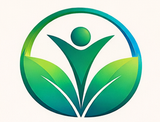
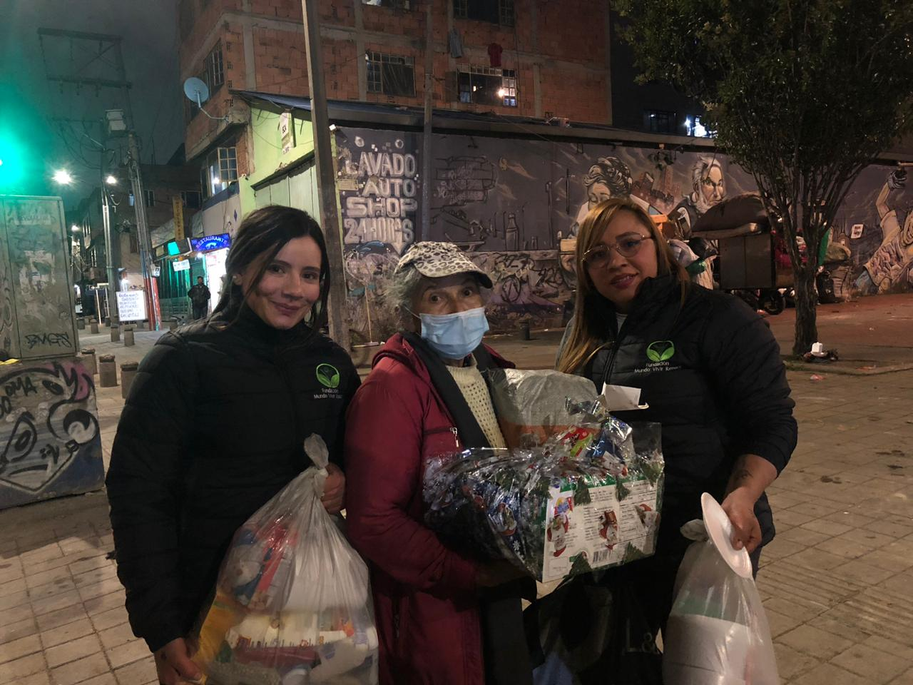

La fundación Mundo Vivir Renace trabaja para promover el bienestar y el desarrollo integral de la población, con especial atención a las comunidades vulnerables y de bajos recursos en Colombia. A través de programas y proyectos sostenibles, buscamos generar un impacto positivo a largo plazo en áreas clave como la educación, la salud, la inclusión social, el apoyo comunitario y el cuidado del medio ambiente.
Para el año 2030, la fundación Mundo Vivir Renace será reconocida en Colombia por su liderazgo en el diseño y ejecución de programas sociales sostenibles que generen un impacto real y duradero en comunidades vulnerables. Aspiramos a ser un referente nacional en la promoción de la educación, la salud, la inclusión social y el desarrollo comunitario.
"Muy pronto podrás leer aquí los testimonios de las personas que apoyan la fundación."